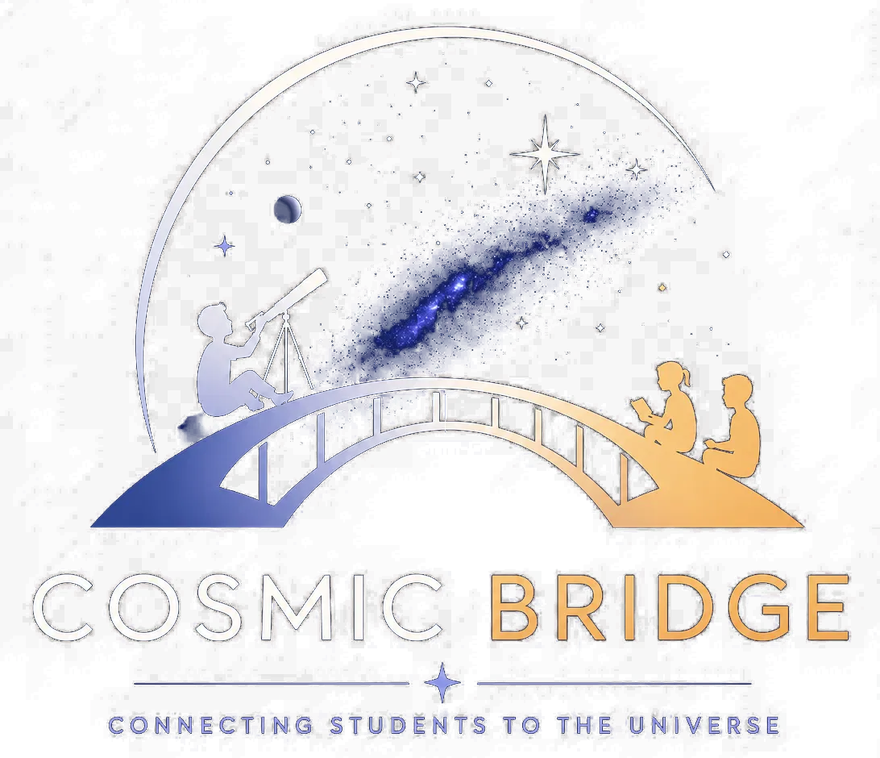

Telescope nights
We bring a telescope so children can see the Moon's craters, planets and bright stars with their own eyes.
Free stargazing sessions · Indore
Cosmic Bridge brings a telescope and simple, hands-on astronomy lessons to NGOs and orphanages near us. Sessions are always free.

Many kids never get to look through a telescope. We want to change that, one evening at a time.
We bring a telescope so children can see the Moon's craters, planets and bright stars with their own eyes.
Short, friendly talks on the Moon, the planets, stars and constellations, in Hindi or English.
There is no fee for any session. We work directly with the people who run each home or NGO.
Each visit is planned around your group, the age of the children and what is up in the sky that week.
We talk with you, pick a clear evening and check that there is an open space with a view of the sky.
We start with pictures and easy questions: Why does the Moon change shape? How far away are the stars?
Every child gets a turn at the eyepiece. We point out what they are seeing and answer their questions.
We finish by spotting a few constellations with the naked eye, so kids can find them again on their own.
Cloudy night? We switch to an indoor session with pictures and activities, or move to another date that suits you.
If you run an NGO, orphanage or shelter in or around Indore, we would love to visit. You don't need any equipment or science background.
That's it. We bring the telescope, the lesson and everything else.
Cosmic Bridge was started by Advik, a high school student in Indore who loves astronomy and does research on blue straggler stars. He also writes the astronomy blog The Backyard Astrophysicist.
The idea is simple: the sky belongs to everyone, but not everyone gets the chance to explore it. Cosmic Bridge is a way to share that with kids who might not get it otherwise.
Send us a message and we will get back to you to plan a date.